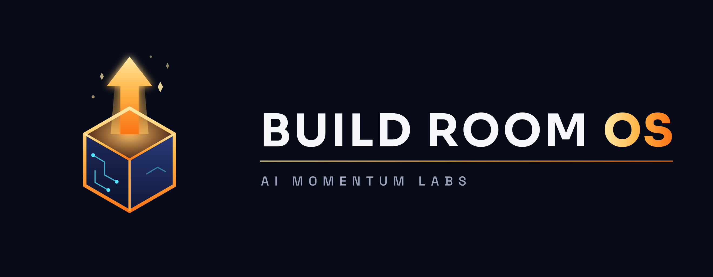

What's new in
Build Room OS
Changes since the November 15 release, plus how to get them.
- New: Autopilot drafts your first build in one run, and stops once so you can review it
- New: "Research my business first" reads the files you agree to, and a short interview covers the rest
- New: Brand Kit locks in your logo and colors, or builds a brand with you
- New way to connect: one personal link, added to Claude or Codex once
- Everything Autopilot makes is a draft. Nothing is published, sent or paid for
Since last time
What's new, in plain words
1. Autopilot NEW
It drafts your ideal client, offer and positioning without interviewing you, and shows them to you on one review page. Every line is tagged as yours, from your files, or drafted for you. Then it waits for your go-ahead.
2. Then the rest, straight through
After your go-ahead it drafts your offer page, funnel, opt-in page, sales script, follow-up and one lead gen module, and checks every draft. It ends with a Your Build page: a link to each draft and a checklist of what still needs you.
3. Research my business first NEW
It shows you a list of file names and reads only what you agree to. Then it shows you what it found, with a source for each fact, and asks at most ten questions.
4. Interview me about my business NEW
Not much written down? This is a short interview, easy questions first. It hands back your business on one page, in your own words.
Good to knowEverything Autopilot makes is a draft. Nothing is published, sent or paid for. If too little is known about your business, it tells you so and will not start unless you choose to go ahead. Say These Words now has thirteen pages; these are on page 2. Forty-two tools now.
Try the new thing first
Try Autopilot
Connected (page 4)? Open Cowork, Claude Code or Codex in the folder that holds your Business File. Then:
- Research first. Type: Research my business first. Read the list of file names and say what to leave out.
- Little written down? Type this instead: Interview me about my business. Plan on about ten minutes.
- Start the run. Type: Run autopilot. Answer the few questions only you can answer, such as your price and your guarantee.
- Read the review page. Say what to change. When it looks right, say go.
- Let it work. Plan on a couple of hours. If it stops, type Run autopilot again and it carries on.
- Open Your Build. Check each draft before you use it.
Also new: Brand Kit. Type Set up my brand kit and hand over your logo, color codes or website. It locks your brand so every post image, page and slide matches. No brand yet? It builds one with you.
Before you startAutopilot needs a folder to save its work, so it does not run in a regular chat. A run uses a large share of your usage allowance. Already built your first modules? It keeps what you built and fills the gaps.
One link, added once
Get connected
Already on the Build Room connector? Nothing to do: the new tools are already there.
Not connected yet? Build Room OS now connects to Claude or Codex with one personal link, so you no longer need the zip. Every step is written out at guide.aimomentumlabs.com/start
- Get your link. Open the join page from the Start Here page. Enter your name, your Build Room email and the room code from your host.
- Add it to Claude. Open Customize (or Settings), then Connectors, then Add custom connector. Name it Build Room OS, paste your link and choose No sign in.
- Check it works. Start a new chat, turn Build Room OS on, and type: What Build Room sessions do I have?
- Brand new? Type: I'm new here. Help me get started. Six quick questions, and your Business File is created.
Used the zip folder before?You do not need to do anything. The first time you use Build Room OS in that folder, Claude or Codex offers to move the old copies into a backup folder. Say yes. Your Business File and your work are not touched.